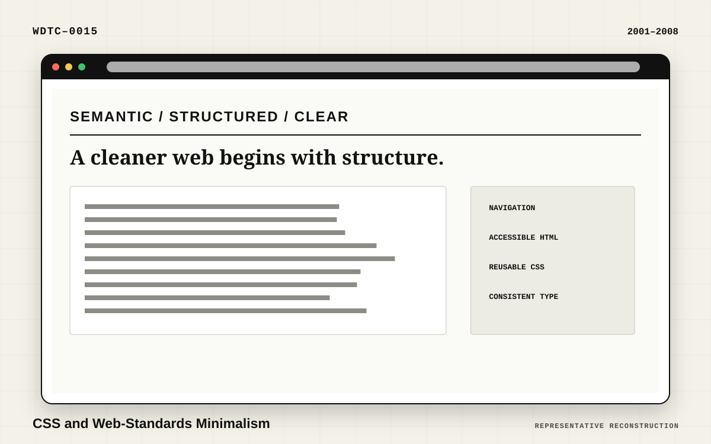
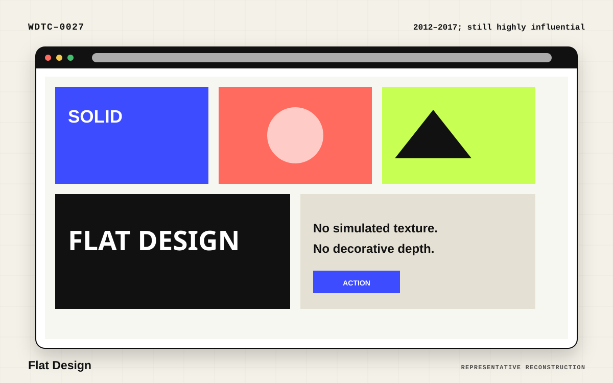
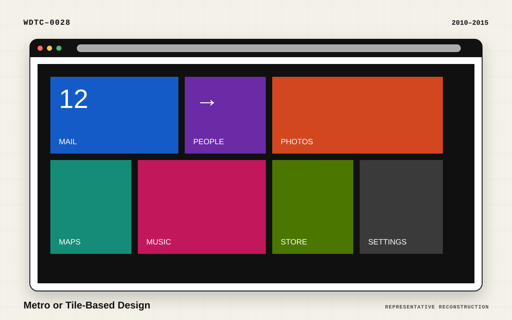

Representative reconstructionCSS and Web-Standards Minimalism
Designers began separating structure from presentation and replacing table-heavy markup with CSS.
Style family 04
Reductionist UI connects minimalism, flat design, Metro, Flat 2.0, and other movements that simplify form, reduce decoration, and prioritize content or interaction.
Visual systems built by removing ornament and clarifying hierarchy.
Included movements
Open a trend to see its exact terminology, visual characteristics, dates, representative specimen, and related movements.

Representative reconstructionDesigners began separating structure from presentation and replacing table-heavy markup with CSS.
 Representative reconstruction
Representative reconstruction
Minimalism removes nonessential decoration and emphasizes hierarchy, spacing, and content.

Representative reconstructionFlat design removed much of skeuomorphism’s texture and simulated depth. It became broadly popular around 2012.

Representative reconstructionAssociated with Microsoft’s interface systems, Metro emphasized typography, flat color, and rectangular modules.
 Representative reconstruction
Representative reconstruction
Flat 2.0 retained flat design’s simplicity while reintroducing restrained depth to clarify interaction. Nielsen Norman Group describes it as a usability-oriented alternative to excessively flat interfaces.
 Representative reconstruction
Representative reconstruction
Google’s Material Design system combined flat visual language with spatial rules, motion, and layered surfaces.
 Representative reconstruction
Representative reconstruction
Designers supplemented minimal layouts with simple abstract forms.
 Representative reconstruction
Representative reconstruction
Dark interfaces moved from specialist applications into mainstream websites and operating systems.
 Representative reconstruction
Representative reconstruction
A standardized commercial language emerged through design systems, templates, and conversion optimization.
 Representative reconstruction
Representative reconstruction
Reusable interface libraries have shaped not only implementation but visual style.
 Representative reconstruction
Representative reconstruction
Visual site builders have democratized polished layouts and popularized repeatable patterns.